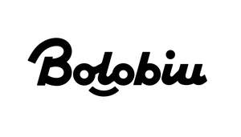

Trade Mark Journal No.2025/030 25 July 2025
UK00004235817 18 July 2025 (9,16,21,25,35)

- Class 9
- Neon signs; Electronic notice boards; Signs, luminous; Flashlights [photography]; Selfie ring lights for smartphones; Optical lanterns; Light dimmers [regulators], electric; Electronic publications, downloadable; Computer programs, downloadable; Electronic shelf labels; Printers for use with computers; Computer peripheral devices; Ink cartridges, unfilled, for printers and photocopiers; Plotters; Weighing apparatus and instruments; Transparencies [photography]; Light-emitting electronic pointers; Films, exposed; Spectacles; Sunglasses.
- Class 16
- Paper; Advertisement boards of paper or cardboard; Advertising posters; Cardboard; Placards of paper or cardboard; Signboards of paper or cardboard; Pamphlets; Cards; Catalogues; Posters; Wrapping paper; Bottle wrappers of paper or cardboard; Boxes of paper or cardboard; Coasters of paper; Lithographic works of art; Business cards; Absorbent sheets of paper or plastic for foodstuff packaging; Humidity control sheets of paper or plastic for foodstuff packaging; Stencils for decorating food and beverages; Printing paper.
- Class 21
- Utensils for household purposes; Ceramics for household purposes; Porcelain ware; Pottery; China ornaments; Statues of porcelain, ceramic, earthenware, terra-cotta or glass; Works of art of porcelain, ceramic, earthenware, terra-cotta or glass; Busts of porcelain, ceramic, earthenware, terra-cotta or glass; Figurines of porcelain, ceramic, earthenware, terra-cotta or glass; Figurines of porcelain, ceramic, earthenware, terra-cotta or glass for cakes; Commemorative statuary cups of porcelain, ceramic, earthenware, terra-cotta or glass; Prize cups of porcelain, ceramic, earthenware, terra-cotta or glass; Cosmetic utensils; Works of art made of porcelain; Works of art made of crystal; Artworks of glass; Crystal [glassware]; Painted glassware; Drinking vessels; Decorative glass spheres.
- Class 25
- Clothing; Footwear; Hats; Hosiery; Gloves [clothing]; Scarves; Belts [clothing]; Wedding dresses; Outerclothing; Trousers; Layettes [clothing]; Bathing suits; Waterproof clothing; Theatrical costumes; Underwear; Skirts; Tights; Overcoats; Tee-shirts; Sports jerseys.
- Class 35
- Retail services in relation to disposable paper products; Bill-posting; Dissemination of advertising matter; Demonstration of goods; Direct mail advertising; Updating of advertising material; Distribution of samples; Publicity material rental; Publication of publicity texts; Rental of billboards [advertising boards]; Outdoor advertising; Direct market advertising; Organization of exhibitions for commercial or advertising purposes; Import-export agency services; Personnel resources management; Search engine optimization for sales promotion; Sponsorship search; Sales promotion for others; Provision of an online marketplace for buyers and sellers of goods and services; Office machines and equipment rental.
ECHOFORGE LIMITED
Representative: MISIIP LIMITED